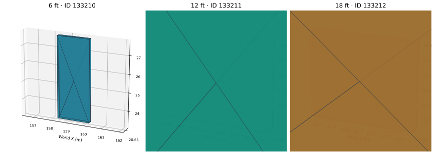

RVT CLEAN-ROOM RESEARCH · NATIVE SOLIDS AND INDEPENDENT IFC MESHESThree new walls in one coordinated save
26,425existing native identities preserved
360existing wall meshes unchanged
3 walls / 1 episodedistinct IDs and registrations

| Native ID | Length | Saved native solid volume | Faces / edges / vertices |
|---|
| 133210 | 6 ft | 60.000000 ft³ | 6 / 12 / 8 |
| 133211 | 12 ft | 120.000000 ft³ | 6 / 12 / 8 |
| 133212 | 18 ft | 180.000000 ft³ | 6 / 12 / 8 |
Native face loops, closed-solid incidence, volume and saved bounds are measured independently from the actual saved RVT. The plots above use separately triangulated IFC meshes. Source partitions and existing geometry are retained.
Validation boundary: local research checks passed. This is not a Revit UI capture. Foreign-producer encoding, native regeneration and Autodesk acceptance remain unverified. IFC schema checks use explicitly recorded OwnerHistory correction controls.
Candidate SHA-256: 3f34208b1d94bb99663601aefe1a2054cd3c7e39d695f4abf193401f24967bf6